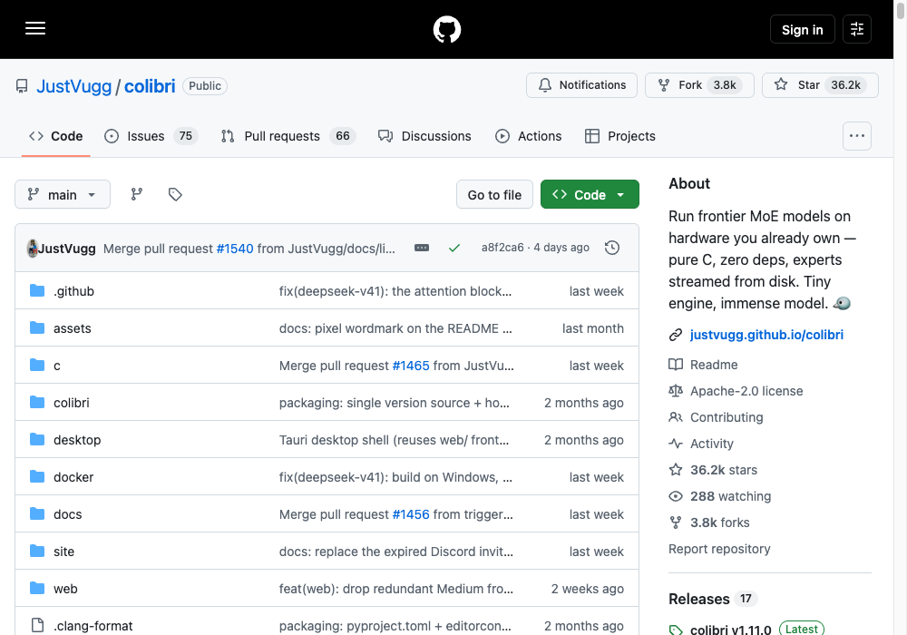
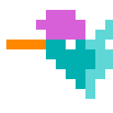
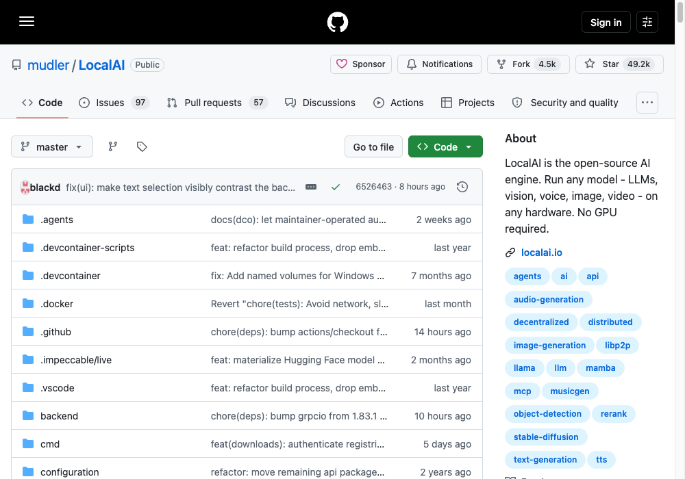
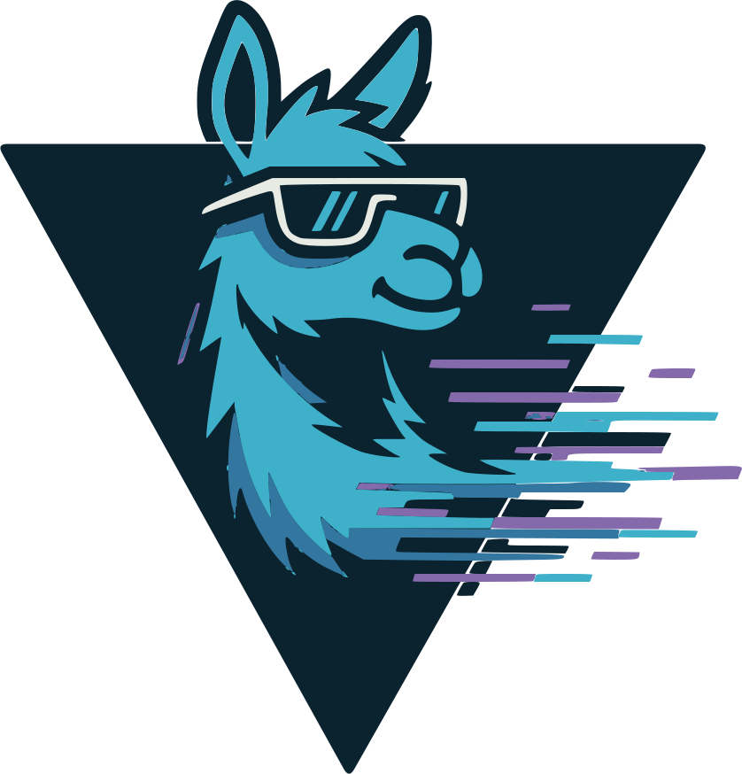
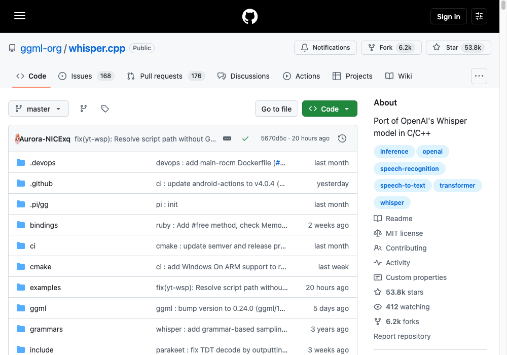
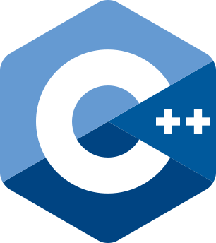
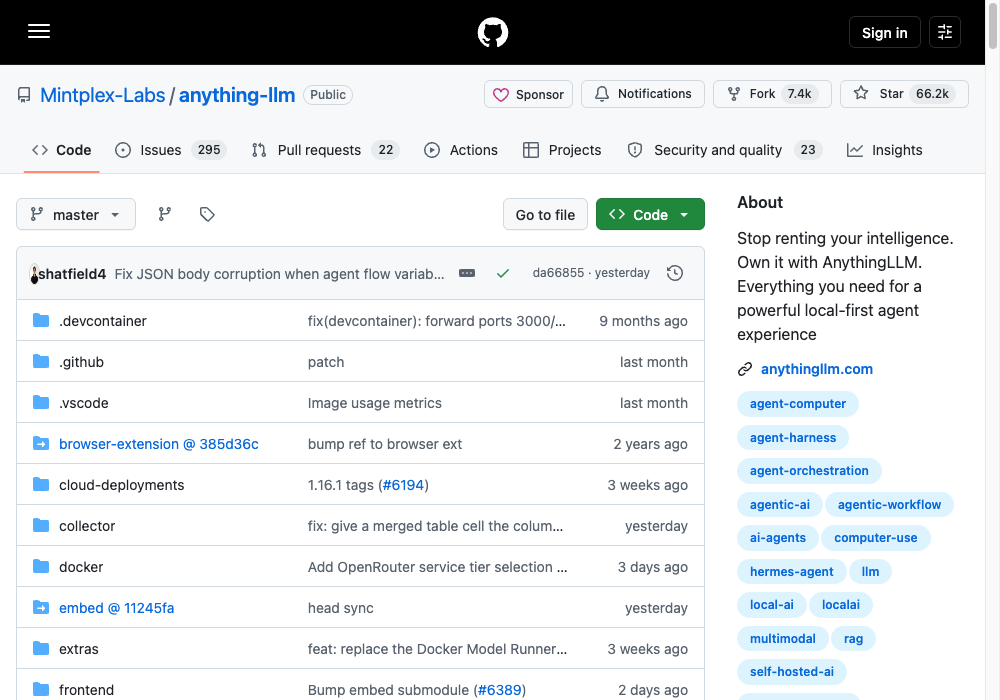
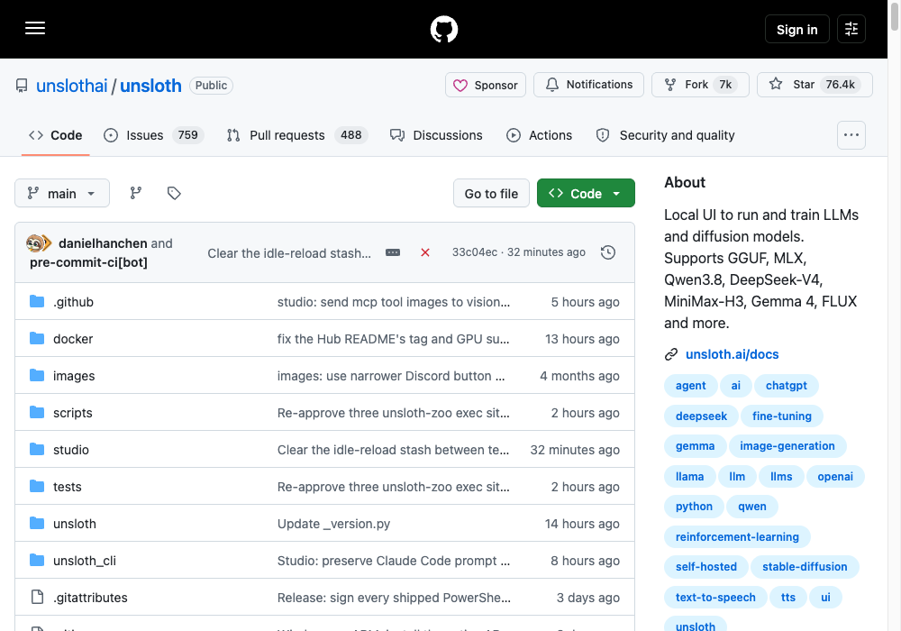
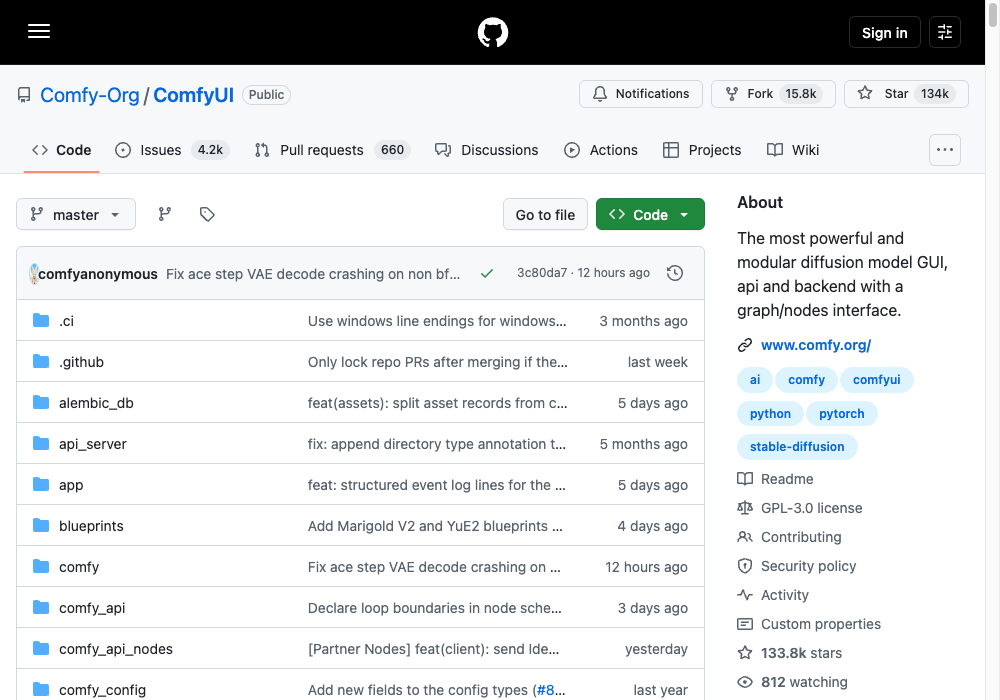
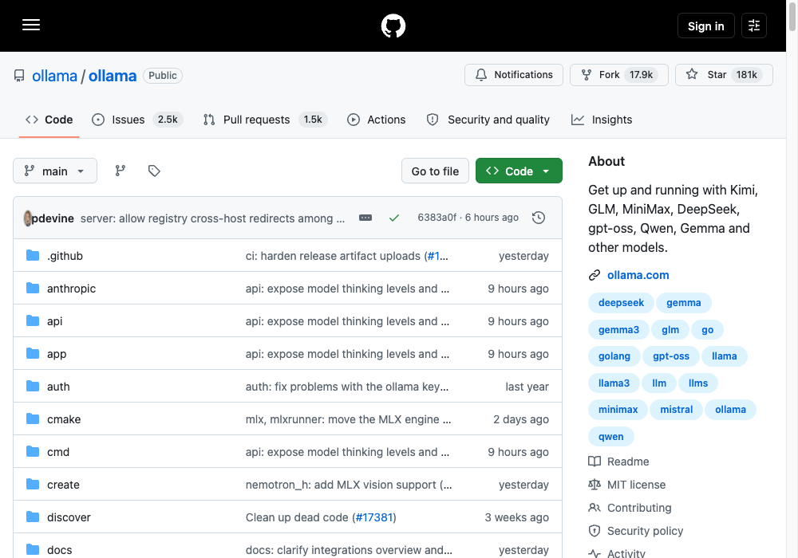

You don't need a supercomputer to run AI locally.
Seven open-source projects that run models on hardware you already own — chat, transcription, image and 3D generation, fine-tuning, and a full private AI over your own documents.
New to this? Start at #7 Ollama — one command and a model is running. Come back to the rest once that works.
#1: colibri
Frontier models. Your own laptop.


colibri ★ 36,218 Apache-2.0Treats your disk, RAM and VRAM as one memory hierarchy and streams the experts in as it needs them. Pure C, zero dependencies — so a 744B-parameter MoE model stops being a question of how much RAM you have.
The catch: it moves the constraint from memory to storage. The reference model (GLM-5.2 int4) is about 372 GB on disk, ideally a fast SSD. This is the most demanding entry in the guide, not the least.
# prebuilt release — no compiler needed # grab your platform's archive from github.com/JustVugg/colibri/releases mkdir colibri && tar xzf colibri-v1.11.0-linux-x86_64.tar.gz -C colibri && cd colibri python3 coli info # or build from source (needs gcc/clang with OpenMP) git clone https://github.com/JustVugg/colibri && cd colibri/c ./setup.sh
COLI_MODEL=/nvme/glm52_i4 ./coli doctor # readiness check COLI_MODEL=/nvme/glm52_i4 ./coli chat # chat in the terminal ./coli web --model /nvme/glm52_i4 # API + dashboard
#2: LocalAI
A drop-in OpenAI API that needs no GPU.


LocalAI ★ 49,165 MITOne engine for LLMs, vision, voice, image and video — including 3D generation. Point any app that speaks the OpenAI API at localhost:8080 and it works, unchanged.
# CPU only docker run -ti --name local-ai -p 8080:8080 localai/localai:latest # NVIDIA GPU (CUDA 13) docker run -ti --name local-ai -p 8080:8080 --gpus all localai/localai:latest-gpu-nvidia-cuda-13
local-ai run llama-3.2-1b-instruct:q4_k_m # from the gallery local-ai run huggingface://TheBloke/phi-2-GGUF/phi-2.Q8_0.gguf local-ai run ollama://gemma:2b # reuse Ollama models
macOS has a signed-elsewhere DMG — after installing, run sudo xattr -d com.apple.quarantine /Applications/LocalAI.app.
#3: whisper.cpp
Transcription with no bill.


C++ whisper.cpp ★ 53,771 MITOpenAI's Whisper ported to C/C++. Runs on the CPU, and on an Apple Silicon Mac it runs on the GPU through Metal. Your calls, interviews and voiceovers stop costing by the minute.
git clone https://github.com/ggml-org/whisper.cpp.git cd whisper.cpp sh ./models/download-ggml-model.sh base.en cmake -B build cmake --build build -j --config Release ./build/bin/whisper-cli -f samples/jfk.wav
#4: AnythingLLM
Stop renting your AI.

A desktop app that puts a full private AI on your machine with your own documents inside it — chat over your docs, plus agents. Runs locally by default; nothing you feed it has to leave the laptop.
# desktop app (Mac, Windows, Linux) open https://anythingllm.com/download # or self-host — multi-user and the embeddable chat widget are Docker-only docker pull mintplexlabs/anythingllm
#5: unsloth
Train your own on one GPU.

Fine-tuning at roughly twice the speed on about 70% less memory, with no accuracy loss — mixture-of-experts models train far faster. This is the one entry here that genuinely wants a GPU; AMD, Intel, Blackwell and DGX Spark have their own install guides.
uv venv unsloth_env --python 3.13 source unsloth_env/bin/activate uv pip install unsloth --torch-backend=auto
winget install -e --id Python.Python.3.13 winget install --id=astral-sh.uv -e uv venv unsloth_env --python 3.13 .\unsloth_env\Scripts\activate uv pip install unsloth --torch-backend=auto
#6: ComfyUI
Image models on a MacBook.

The image and video generation stack, as a graph/nodes interface. It offloads models and manages memory so a laptop can hold the whole graph — and it supports every OS and GPU type, including Apple Silicon.
pip install comfy-cli comfy install
Prefer a double-click? The desktop app covers Windows and macOS.
#7: ollama
One command. Models running.

The front door if you've never done this before. Install it, type one line, and Kimi, GLM, DeepSeek, gpt-oss, Qwen or Gemma is running on your own machine.
curl -fsSL https://ollama.com/install.sh | sh ollama run gemma4
It also plugs straight into coding tools — ollama launch claude wires it to Claude Code, and Codex, Copilot CLI, Droid and OpenCode have their own launchers.
ollama launch claude
Install everything.
Copy, paste, done. One row per repo.
| Repo | Command | Stars | What it needs |
|---|---|---|---|
| ollama | curl -fsSL https://ollama.com/install.sh | sh | 181K | Anything — start here |
| ComfyUI Comfy-Org | pip install comfy-cli && comfy install | 134K | M1–M4 Mac, or any GPU |
| unsloth unslothai | uv pip install unsloth --torch-backend=auto | 76K | One GPU |
| anything-llm Mintplex-Labs | docker pull mintplexlabs/anythingllm | 66K | Desktop app, no GPU |
| whisper.cpp ggml-org | sh ./models/download-ggml-model.sh base.en | 54K | CPU only |
| LocalAI mudler | docker run -ti -p 8080:8080 localai/localai:latest | 49K | No GPU required |
| colibri JustVugg | COLI_MODEL=/nvme/glm52_i4 ./coli chat | 36K | ~372 GB of fast disk |
"Runs locally" is not the same as "runs on anything".
Ollama, LocalAI, AnythingLLM and whisper.cpp genuinely run on modest hardware with no GPU. ComfyUI wants a decent GPU or Apple Silicon. Unsloth wants a real GPU. Colibri wants a very large, very fast SSD. Read the README's requirements before you start the download — that's where the surprise usually is.